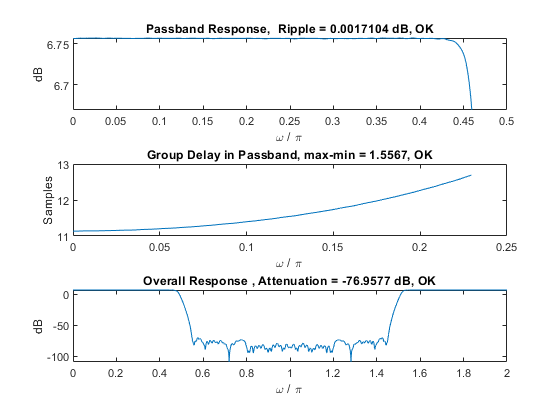
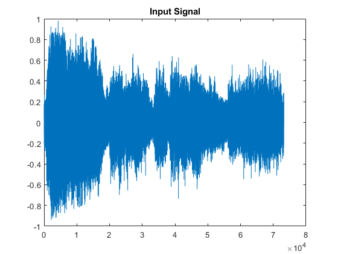
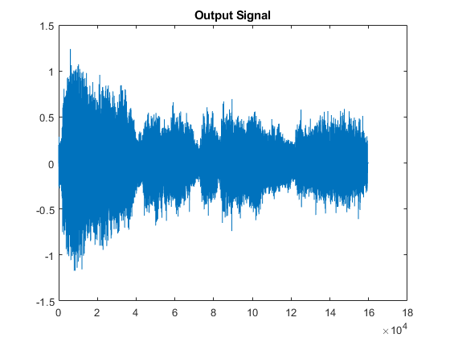

Contents
%Daniel Kim, Ella Cheng %Professor Keene %The Cooper Union %DSP Project 1
Clear Stage
clc; clear; close all;
Polyphase filtered w/ Multistaging
tic [y,calc_y,total_y] =srconvert([1 zeros(1,3000)]); disp(['Computations per sample: ', num2str(calc_y)]); disp(['Total computations per sample: ', num2str(sum(calc_y))]); disp(['Total Computations per filter: ', num2str(total_y)]); disp(['Total Computations: ', num2str(sum(total_y))]); toc verify(y);
Computations per sample: 815 335 335 335 335 335 335
Total computations per sample: 2825
Total Computations per filter: 2445815 5162350 1483045 3021700 6099010 1750710 3557030
Total Computations: 23519660
Elapsed time is 0.032838 seconds.
ans =
'Passband Ripple: 0.002 dB
'
ans =
'Groupdelay Variation: 1.556687e+00 samples
'
ans =
'Stopband Attenuation: -76.958 dB
'
 No polyphasing w/ Multistaging
tic [yb, calc_yb, total_yb]=srconvert_baseline([1 zeros(1,3000)]); disp(['Computations per sample: ', num2str(calc_yb)]); disp(['Total computations per sample: ', num2str(sum(calc_yb))]); disp(['Total Computations per filter: ', num2str(total_yb)]); disp(['Total Computations: ', num2str(sum(total_yb))]); disp(['Polyphase filtering cuts down number of calculations by a factor of: ', num2str(sum(total_yb)/sum(total_y))]); toc verify(yb);
Computations per sample: 815 335 335 335 335 335 335
Total computations per sample: 2825
Total Computations per filter: 12229075 10326040 2966760 6045410 12202710 3502760 7117410
Total Computations: 54390165
Polyphase filtering cuts down number of calculations by a factor of: 2.3125
Elapsed time is 0.024221 seconds.
ans =
'Passband Ripple: 0.002 dB
'
ans =
'Groupdelay Variation: 1.556687e+00 samples
'
ans =
'Stopband Attenuation: -76.958 dB
'
Audio Verification
x = audioread('Wagner.wav'); [z, calc_z, total_z] = srconvert(x'); sound(x,11025); %sound(z,24000); figure; plot(x); title('Input Signal') figure; plot(z); title('Output Signal'); 
Final Thoughts
The polyphase filtering reduced the number of calcs by ~2.3. In each filter, it should reduce the number of calcs by a factor of L as only 1/L calculations are actually useful in non-polyphased filtering. We tried to create a baseline for a filter with both no multistaging or polyphasing, but the filter cutoff was so small that the order of the filter had to be huge so we didn't include that.